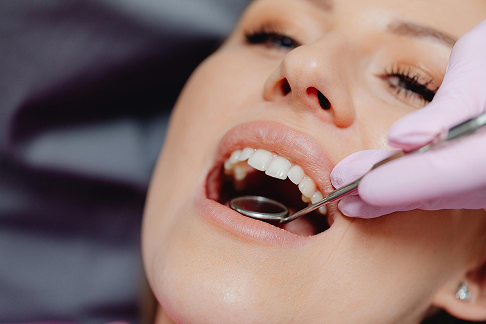

Listado de prestadores adheridos
En Doc Oral trabajamos con diversas Obras Sociales y Mutuales para ofrecerte la mejor atención.
Estamos en constante expansión, incorporando nuevos servicios y ampliando la cobertura social.
Si tu Obra Social no figura en este listado, no dudes en consultarnos.

Rafael Nuñez 1988 - B° Cerro De Las Rosas
849964143
+54 351 849964143
doc.bucal@gmail.com